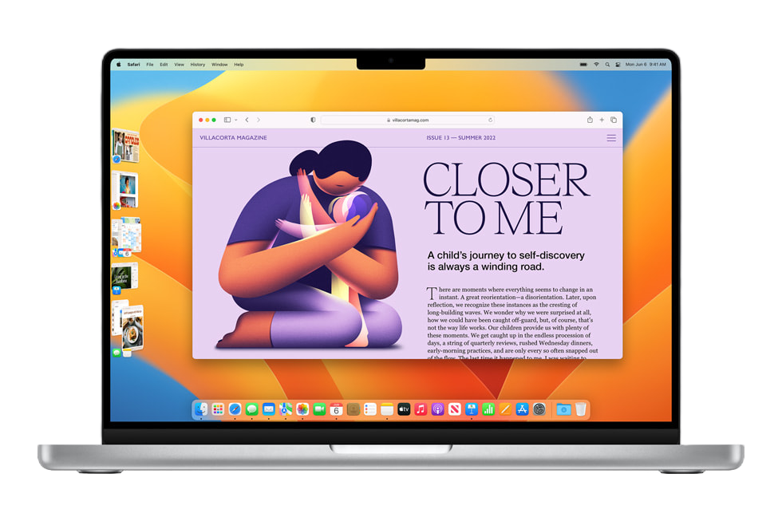
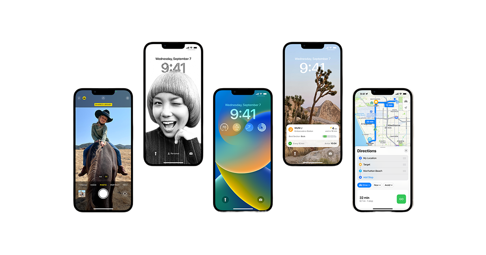
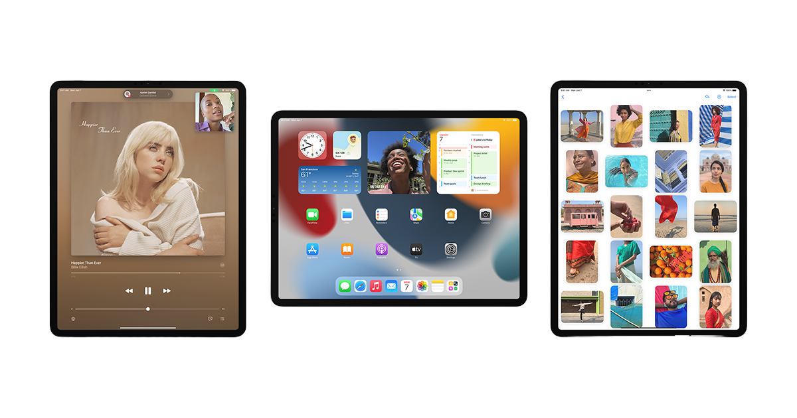
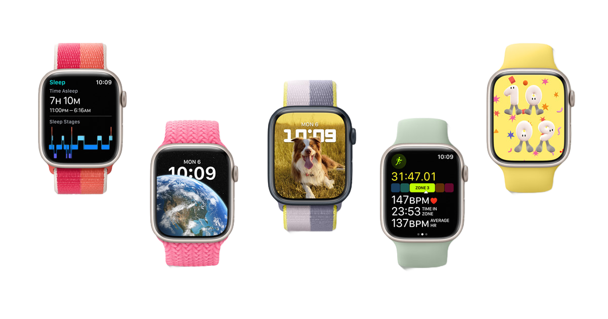

Operating Systems
Elk device gebruikt een besturingssysteem, een OS. Apple heeft er vier. Apple kan OS'en maken als geen ander, met altijd een goede balans tussen intuïtiviteit, gemak en design. We gaan ze op deze pagina alle vier langs.

macOS
Er zijn twee grote besturingssystemen voor personal computers in de wereld, macOS en Windows. Aan welke
zijde je ook staat, zelfs doorgewinterde Windows-nerds zullen moeten toegeven dat macOS er vele malen
mooier uitziet dan zijn concurrent. Het is ook nog eens veel veiliger, Mac-gebruikers hebben bewezen
minder last van virussen en andere ongenode programmaatjes. Daarnaast is er een naadloze samenwerking
tussen je iPhone, Apple Watch of iPad en je Mac. Je kan bijvoorbeeld je Mac ontgrendelen als je Apple
Watch in de buurt is, of je kan je iPad als tweede scherm gebruiken. En wil je een afbeelding van je
iPhone naar de Mac krijgen? Dat kon al supersnel met AirDrop, maar nu kan het gewoon kopiëren op je
telefoon en plakken op je Mac! Over gemak heeft Apple ook nagedacht. Met het makkelijk aan te roepen
Spotlight kan je het web, je bestanden, je foto's, woordenboeken en nog zo veel meer doorzoeken, met
één druk op de knop!
Nog een reden waarom Mac beter is dan Windows: Microsoft heeft het idee van de muis en de bitmap-interface
klakkeloos gekopieerd van Apple. Dankzij Steve Jobs werd het bitmappen geïntroduceerd, het systeem waarbij
je elke pixel appart bestuurd, waardoor je mooie interfaces kan maken in plaats van alleen een command
line met wat groene letters. Datzelfde geldt voor het idee van met de muis bewegen en kunnen klikken.
Apple is natuurlijk constant bezig om macOS en zijn apps te verbeteren. Safari bijvoorbeeld, dat is de
snelste en veiligste browser die de wereld kent.
In macOS 13 Ventura zijn er een aantal nieuwe features geïntroduceerd, zoals het kunnen FaceTimen met
de camera van je iPhone (weer zo'n voorbeeld). Of wat te denken van Stage Manager, waarmee je apps
kan bundelen en die tegelijk kan aanroepen (zie ook de afbeelding hierboven).
Het is ook wel leuk om te vermelden waar de namen vandaan
komen (zoals Ventura, Monterey, Big Sur, Catalina en Mojave). Die komen allemaal van mooie, natuurlijke en
bekende
plekken in Californië, waar Apple is ontstaan en waar het hoofdkantoor op Apple Park nog steeds staat. De
achtergronden die je ziet op het bureaublad van de Mac, komen ook van die plaatsen. Back in
the old days heette het nog Mac OS X (10), en kwam er elke keer een nieuwe versie van OS X uit (vanaf
Cheetah
tot El Capitan).

iOS
En de award voor het mooiste mobiele besturingssysteem gaat naar... iOS! Apple heeft de balans tussen
eenvoud en design in de roos geraakt. Zowel ouderen als veeleisende pro's kunnen er goed mee uit de
voeten. En het wordt jaar op jaar beter.
De nieuwe versie, iOS 16, is net uit. Het biedt een hoge mate van customizability voor je lockscreen,
met afbeeldingen waar de voorgrond naar voren komt en de kleuren en lettertypen kan aanpassen. En niet
te vergeten zijn er ook widgets, die in iOS 14 al naar het homescherm waren gebracht. Met verschillende
focussen kan je de juiste concentratie op de juiste momenten krijgen. Ook de functie live text is
uitgebreid, je kan nu een video pauzeren en de tekst op je scherm selecteren.
Apple heeft ook een nieuwe app toegevoegd: Conditie. Een uitbreiding van de Gezondheid-app, met de
vertrouwde interface van de ringen van de Apple Watch. Ook de Woning-app is er op vooruitgegaan,
met een nieuwe indeling is hij overzichtelijker geworden en bovendien is Apple een samenwerking
aangegaan met een paar andere grote spelers in de smarthome-markt, waar Matter uit is voortgekomen.
Daardoor wordt je iPhone met nog meer smarthome-producten compitabel.
Met Apple Pay hoef je nooit meer te denken om je portemonnee. Apple heeft deze functie dit jaar naar
een nog hoger niveau getild, je kan je bestelling bij een restaurant nu volgen als zij dit ondersteunen
en je kan in termijnen betalen. Apple heeft ook aan ondernemers gedacht, zij kunnen een iPhone gebruiken
als een soort pinautomaat voor contactloos betalen.
Met Memoji zeg je vaak meer dan met een berichtje. Apple heeft het maximale uit Memojis gehaald, je kan
ze volledig aanpassen en met een iPhone met FaceID kan hij je gezichtsuitdrukkingen herkennen, zodat
je die ook op de Memoji te zien krijgt. Een functie die diezelfde NFC chip benut, is Power Reserve modus,
die ervoor zorgt dat je je digitale sleutels op je iPhone nog tot vijf uur nadat de batterij leeg is kan
gebruiken.

iPadOS
De iPad is extreem handzaam en extreem krachtig, en om dat mogelijk te maken is er een extreem goed
besturingssysteem nodig, iPadOS. Dat is geoptimaliseerd zodat het een volwaardige vervanger is van een
computer, voor de basisgebruiker die alleen mails leest en websites bezoekt, maar ook zeker voor de
creatieve pro's die het maximale uit hun workflow willen halen.
IPadOS 16 introduceert een aantal nieuwe features, en ook een paar die overgenomen zijn van macOS (denk aan
Stage Manager). Dankzij de versie van 2022 kunnen sommige modellen een extern display tot wel 6K (!) aan.
Apple heeft ook Metal 3 naar de iPad gebracht, waardoor gameontwikkelaars de maximale performance kunnen
leveren met hun games. Game Center is natuurlijk ook een must voor gamen op een iPad. Met SharePlay kan je
samen met je vrienden spelen, terwijl je samen in een FaceTime call zit. Je kan nu ook twee controllers
aan één speler koppelen, zodat je vriend je kan helpen met zijn eigen controller. Er is ook een nieuwe app
geïntroduceerd,
Freeform. Die werkt het handigst in combinatie met FaceTime, je krijgt namelijk een oneindig grote lege
canvas waarop je kunt brainstormen of gewoon op klooien.
Nog een paar leuke nieuwtjes over iPadOS: De Weer-app komt eindelijk naar de iPad. Ook handig: je kan nog
tot
10 seconden nadat je een mailtje heb verstuurd hem weer terughalen. Apple gaat ook ondersteuning toevoegen
voor passkeys, een nieuwe manier van wachtwoorden opslaan (waardoor je geen wachtwoorden meer nodig hebt).
Ook zullen App Clips verbeterd worden, de grootte van de toch al kleine apps wordt gehalveerd. IPadOS
ondersteunt nu 'virtual memory swap', daarmee kan je het werkgeheugen tijdelijk verhogen tot 16 gigabyte,
voor de allerzwaarste apps. Misschien iets minder relevant: Kazachs en Bulgaars zijn nu ook beschikbaar
als systeemtaal.
De iPad is heel handig voor multitasken. Je kan met Split View makkelijk twee apps naast elkaar zetten,
en dan nog een app eroverheen. Ook kan je met één swipe vanaf rechtsonder een Snelle Notitie aanroepen,
wat eigenlijk gewoon een verkleinde notitie app is die je overal op het scherm kan plaatsen.
Voor kunstenaars is de Apple Pencil onmisbaar. Dankzij de kracht van iPadOS kan je dingen schrijven met de
Pencil
en ze omzetten in echte tekst. Ook zijn er veel geavanceerde functies, zoals hoe hard je drukt en de hoek
die
de Pencil heeft. Apps zoals Garageband tillen iPadOS zeker naar een hoger niveau.

watchOS
De Apple Watch houdt zo'n beetje je de hele staat van je gezondheid bij. Van je activiteit tot je hartslag,
van je bloeddruk tot je zuurstofgehalte. Als je iets actiefs gaat doen, heb je op de Watch keuze uit
oneindig
veel verschillende workouts. En ben je vergeten je rondje hardlopen aan te zetten? Geen probleem, de Watch
weet het eerder dan jijzelf. Ook je slaap wordt nauwletten in de gaten gehouden, en je kan je eigen slaap
achteraf
gewoon analyseren. Een leuk deel van de Watch is het homescherm, de Watch Face. Die kan je helemaal
customizen,
zoals jij het wil. Je kan een kompas nemen, maar een luchtdrukmeter met een analoge klok erin een kan ook,
het is dus
allemaal mogelijk.
Een aantal nieuwe features in watchOS 9: Medicatiewaarschuwingen zullen levensreddend zijn. Je geeft aan
welke
medicijnen je wilt gaan slikken, en je krijgt een waarschuwing als je een gevaarlijke combinatie wil
gebruiken.
Er zijn ook veel handgebaren beschikbaar om snelle acties uit te voeren, zoals een foto nemen met je iPhone.
En
als je op iPhone of iPad een workout start met Apple Fitness+, wordt die naadloos gesynchroniseerd met je
Watch.
Een geweldige functie is toch echt wel dat je opa een Apple Watch kan geven, en dat je dan op je eigen
account
van je Apple ID zijn gezondheidsrapporten kan zien, en dus ook een melding krijgt als er iets mis is. Ook is
het
handig om je kinderen in de gaten te kunnen houden, zelfs als ze nog geen telefoon hebben.